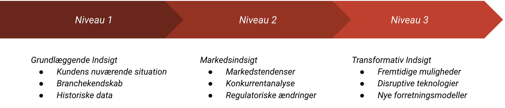

Challenger Salg
Challenger salg er en moderne salgstilgang, populariseret af bogen "The Challenger Sale" (2011) af Matthew Dixon og Brent Adamson. Deres forskning viste, at i komplekse B2B-salg var den mest succesfulde sælgertype "The Challenger" – ikke den traditionelle relationsbygger. Denne metode handler om aktivt at udfordre kundens antagelser og tænkning ved at levere unik indsigt. Den er særligt effektiv i finanssektoren, hvor kunder ofte har forudfattede meninger eller mangler indsigt i komplekse finansielle produkter og løsninger.
I dette kapitel fokuserer vi på:
- Grundprincipperne i challenger salg
- De tre niveauer af kundeindsigt
- Teknikker til at udfordre kundens tænkning
- Praktiske eksempler fra finansverdenen
Podcast om pitching i finanssektoren
Podcast om pitching i finanssektorenGrundprincipperne i Challenger Salg
| Princip | Beskrivelse | Finansielt Eksempel |
|---|---|---|
| Kommerciel Indsigt | Del unik viden om markedet og trends | Nye investeringsmuligheder i grøn energi |
| Konstruktiv Tension | Skab positiv spænding gennem udfordring | Udfordre traditionel pensionsopsparing |
| Ny Perspektiv | Præsenter alternative synsvinkler | Alternative investeringsstrategier |
| Skalerbar Læring | Del indsigt på tværs af kundebase | Branchespecifikke løsninger |
De Tre Niveauer af Kundeindsigt

- Niveau 1: Grundlæggende Indsigt
- Kundens nuværende situation
- Branchekendskab
- Historiske data
- Niveau 2: Markedsindsigt
- Markedstendenser
- Konkurrentanalyse
- Regulatoriske ændringer
- Niveau 3: Transformativ Indsigt
- Fremtidige muligheder
- Disruptive teknologier
- Nye forretningsmodeller
Case: Challenger Salg i Praksis
Situation: En mellemstor virksomhed med traditionel bankfinansiering
Challenger Dialog:
| Fase | God Tilgang | Dårlig Tilgang |
|---|---|---|
| Indsigt | "Vores analyse viser, at virksomheder i jeres branche kan reducere finansieringsomkostninger med 30% gennem alternative finansieringskilder." | "Vi kan tilbyde bedre renter end jeres nuværende bank." |
| Udfordring | "Hvordan ville det påvirke jeres vækstplaner, hvis I kunne frigøre 30% af jeres finansieringsomkostninger?" | "Er I tilfredse med jeres nuværende bank?" |
| Ny Vision | "Lad mig vise jer, hvordan en kombination af factoring og erhvervsobligationer kan transformere jeres finansieringsstruktur." | "Vi kan tilbyde jer et nyt lån med bedre vilkår." |
Resultat: Kunden implementerer en ny finansieringsstruktur, der reducerer omkostninger og øger fleksibilitet.
Anekdote: Kopimaskine-sælgeren der lærte kunden noget nyt
Bogen "The Challenger Sale" beskriver (baseret på deres forskning) scenarier, hvor en sælger vinder ved at lære kunden noget om deres egen forretning, som de ikke vidste. Forestil dig en sælger af avancerede kopimaskiner/printerløsninger. I stedet for at spørge "Hvad er jeres behov?" (som relationsbyggeren ville) eller "Hvad koster jeres nuværende løsning?" (som den klassiske sælger), starter Challenger-sælgeren måske med en indsigt: "Vores analyser viser, at virksomheder som jeres i gennemsnit spilder 15% af deres printbudget på unødvendige farveprint og forkert dokumenthåndtering, hvilket ofte overses i IT-budgetterne." Dette fanger kundens interesse på en ny måde. Sælgeren underviser derefter kunden i, hvordan man identificerer og løser dette specifikke problem (som tilfældigvis peger mod sælgerens løsning). Kunden køber ikke bare en maskine; de køber indsigt og en løsning på et problem, de måske ikke engang vidste, de havde i det omfang.
Non-finansielt eksempel: Konsulenten der udfordrer strategien
En managementkonsulent bliver hyret til at hjælpe en virksomhed med at forbedre deres marketing. Kunden forventer måske forslag til nye annoncekampagner.
- Konsulentens Indsigt (Challenger): "Vores analyse af jeres markedsdata og konkurrentlandskab viser, at jeres kerneudfordring ikke er manglende synlighed, men derimod en utydelig værdipositionering over for jeres idealkunder. Faktisk viser data, at øget annoncebudget med den nuværende strategi sandsynligvis vil have lav ROI (Return on Investment – hvad får kunden ud af det?)."
- Udfordring: "I stedet for at tale annoncekroner, hvordan ville det påvirke jeres salg, hvis I kunne øge konverteringsraten med 20% ved at skærpe jeres budskab til det rigtige segment?"
- Ny Vision: Konsulenten præsenterer en ny segmenteringsmodel og en skærpet værdipositionering, der adresserer det underliggende problem, før de overhovedet diskuterer specifikke marketingkanaler.
Konsulenten vinder tillid ved at levere en uventet, men værdifuld, indsigt, der flytter fokus fra symptomer (marketing) til årsagen (strategi).
Cases: Challenger Salg i Praksis
Case: Revision (Udfordring af Interne Kontroller)
Udgangspunkt: En revisor (Challenger), Peter, mødes med CFO'en i en mellemstor produktionsvirksomhed, der har haft samme revisionsfirma i mange år og generelt er tilfredse.
Challenger Tilgang:
- Indsigt (Teach): Peter starter ikke med at rose sit eget firma. I stedet siger han: "Vi har for nylig analyseret interne kontrolsvagheder på tværs af 50 produktionsvirksomheder i jeres størrelse. Et overraskende fund var, at 60% havde utilstrækkelig adskillelse af funktioner i deres indkøbsproces, hvilket i gennemsnit førte til et uopdaget svind på 1-2% af indkøbsbudgettet – noget der sjældent fanges af standardrevision."
- Skræddersy (Tailor): "Jeg kender ikke jeres præcise proces endnu, men med jeres nuværende vækst og stigende antal leverandører, er det en risiko, der typisk vokser sig større og mere usynlig over tid i virksomheder som jeres."
- Udfordring/Tag Kontrol (Take Control): "I stedet for blot at tale om den lovpligtige revision, hvordan ville det påvirke jeres bundlinje og risikoprofil, hvis vi kunne identificere og kvantificere denne specifikke risiko hos jer? Vores specialiserede procesrevision fokuserer netop på at afdække sådanne skjulte sårbarheder, før de bliver til reelle tab."
Resultat: CFO'en, hvis fokus måske primært var på revisionshonoraret, bliver nu interesseret i en dybere samtale om procesoptimering og risikostyring, hvilket åbner døren for salg af en mere værdiskabende rådgivningsydelse udover standardrevisionen.
Case: Erhvervsejendomsmægler (Udfordring af Porteføljestrategi)
Udgangspunkt: En ejendomsmægler (Challenger), Maria, mødes med en investor, der ejer flere ældre kontorejendomme i en større by og primært fokuserer på stabil drift og udlejning.
Challenger Tilgang:
- Indsigt (Teach): "Vores seneste markedsanalyse for kontorsegmentet i [By] viser et markant skift. Mens den samlede efterspørgsel er stabil, ser vi et fald på 20% i efterspørgslen på traditionelle kontorlokaler over 500 kvm. Samtidig er der en vækst på 30% i efterspørgslen på fleksible kontorhoteller og mindre, moderne lejemål under 200 kvm med fokus på bæredygtighedscertificeringer. Mange passive ejendomsinvestorer overser denne polarisering."
- Skræddersy (Tailor): "Jeres portefølje består primært af de ældre, større lejemål, som er i den faldende del af markedet. Selvom jeres nuværende belægning er okay, indikerer trenden en stigende risiko for tomgang og faldende lejeværdi inden for de næste 3-5 år, især hvis bygningerne ikke lever op til nye ESG-krav."
- Udfordring/Tag Kontrol (Take Control): "Frem for blot at finde nye lejere til de nuværende rammer, hvordan ville jeres langsigtede afkast se ud, hvis I proaktivt konverterede en eller to af ejendommene til moderne, fleksible og certificerede enheder? Vi har udviklet en model, der viser potentialet for øget lejeindtægt og værdistigning ved en sådan transformation, selv medregnet ombygningsomkostninger."
Resultat: Investoren, der måske blot søgte hjælp til genudlejning, engagerer nu Maria i en strategisk diskussion om porteføljeudvikling og får udarbejdet en konkret analyse af konverteringspotentialet.
Case: Forsikring (Udfordring af Cyberrisiko-opfattelse)
Udgangspunkt: En forsikringsrådgiver (Challenger), Thomas, mødes med direktøren for en mellemstor logistikvirksomhed, som har en standard erhvervs- og cyberforsikring.
Challenger Tilgang:
- Indsigt (Teach): "Vi ser en ny tendens inden for cyberangreb rettet mod logistikbranchen. Det handler ikke længere kun om ransomware på kontor-pc'er, men om målrettede angreb på jeres TMS (Transport Management System) og lagerstyringssystemer. Data viser, at 40% af angrebene nu specifikt sigter mod at lamme forsyningskæden, ikke kun stjæle data. De traditionelle cyberforsikringer dækker ofte kun data-tabet, ikke de massive driftstab der følger."
- Skræddersy (Tailor): "Med jeres avancerede TMS og jeres kunders krav om just-in-time levering, vil et nedbrud i disse systemer – selv for få timer – have uforholdsmæssigt store økonomiske konsekvenser for jer, langt ud over værdien af eventuelle stjålne data."
- Udfordring/Tag Kontrol (Take Control): "Er jeres nuværende beredskabsplan og forsikringsdækning gearet til at håndtere et scenario, hvor jeres kerne logistiksystemer er målet, og I oplever et driftstab, der er 10 gange større end selve data-tabet? Lad os gennemgå jeres specifikke sårbarheder i TMS-systemet og se, hvordan en udvidet cyber-driftstabsdækning kan give jer den nødvendige robusthed."
Resultat: Direktøren indser, at deres nuværende cyberdækning er utilstrækkelig i forhold til de reelle, branchespecifikke trusler. Thomas får mulighed for at sælge en mere omfattende og skræddersyet cyberforsikringsløsning.
Case: Investeringsrådgivning (Udfordring af "Sikker" Portefølje)
Udgangspunkt: En Private Banker (Challenger), Anna, mødes med en ældre kunde, der har en stor del af sin formue placeret i traditionelle, lavrisiko obligationer og kontanter, da kunden prioriterer "sikkerhed".
Challenger Tilgang:
- Indsigt (Teach): "Mange kunder fokuserer på nominel sikkerhed – at tallet på kontoen ikke falder. Men i det nuværende inflationsmiljø er den reelle risiko for formuende faktisk tab af købekraft. Historiske data viser, at selv obligationer med lav nominel risiko over de sidste 5 år har givet et negativt realafkast efter inflation og skat. Den største trussel mod din formues levetid er ikke nødvendigvis markedsudsving, men at den langsomt bliver spist op af inflation."
- Skræddersy (Tailor): "Med din tidshorisont og dit ønske om at bevare formuen til næste generation, betyder et årligt realtab på f.eks. 3% pga. inflation, at formuen vil være halveret i købekraft om ca. 23 år, selvom det nominelle beløb ser stabilt ud."
- Udfordring/Tag Kontrol (Take Control): "Er din nuværende strategi designet til at beskytte mod den reelle risiko – tab af købekraft – eller kun mod den nominelle risiko for faldende tal? Lad os se på, hvordan en veldiversificeret portefølje med en moderat andel af inflationssikre aktiver, som f.eks. globale kvalitetsaktier og infrastruktur, historisk set har givet en langt bedre beskyttelse af købekraften på lang sigt, selv med kortsigtede udsving."
Resultat: Kunden, der var fastlåst i en "sikker" men potentielt værdiforringende strategi, bliver åben for at diskutere en justering af porteføljen mod aktiver med bedre inflationsbeskyttelse, hvilket giver Anna mulighed for at implementere en mere passende langsigtet strategi.
Implementering af Challenger Salg
Nøgleelementer for Succes:
| Element | Beskrivelse | Værktøjer |
|---|---|---|
| Research | Grundig forberedelse og analyse | Markedsanalyser, brancherapporter |
| Timing | Vælg det rette tidspunkt for udfordring | Kundejournal, mødenoter |
| Opfølgning | Systematisk opfølgning på indsigter | CRM-system, aktivitetsplan |
Typiske Udfordringer og Løsninger
| Udfordring | Konsekvens | Løsning |
|---|---|---|
| For aggressiv udfordring | Kunden bliver defensiv | Start med mindre udfordringer, byg tillid gradvist |
| Manglende forberedelse | Mister troværdighed | Grundig research og dokumentation |
| Forkert timing | Misser muligheden | Læs kundens signaler og situation |